Candidate List 20250916Previous Day Next Day
Section 1: New Sources (age<1d) Section 2: Old (1-5d) sources observed last nightplaceholder
Section 2: Older Sources Observed Last Night (4)
0. ZTF25abqibjq (Afterglow?) [Back to Top] [Share] [Trigger Swift] [Fritz] [Lasair]RA, Dec: 243.17691, 47.30914 16h12m42.46s, 47d18m32.90sGalactic (l, b): 74.12729, 46.09424 ext(g-r) = 0.018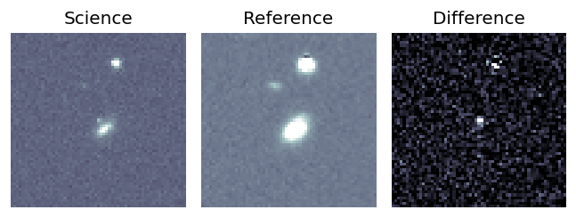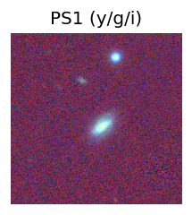
PS1: 0 sources in 3 arcsec
LegacySurvey: 1 sources in 3 arcsec Closest: d = 3.72 arcsec, 212.9 deg (east of north) photoz=0.13 (68% bounds 0.11, 0.14), type=SER peak abs mag = -18.89 (68% bounds -18.48, -19.08)
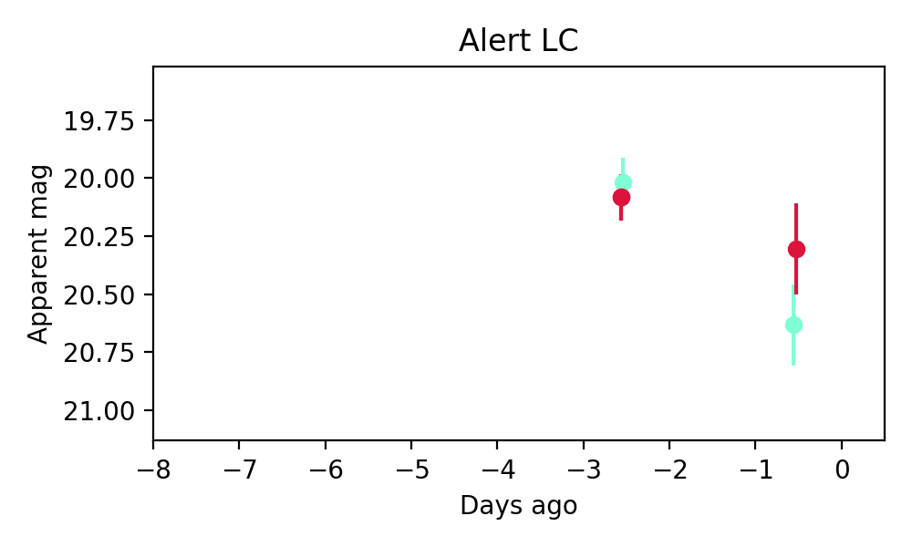
Extinction-corrected gr color:
From alerts: 0.31 +/- 0.26 mag
Consistent with synchrotron, g-r>0!
Rise Rate:
g: 0.1 mag/day
r: 0.06 mag/day
i: -99 mag/day
Fade Rate:
g: 0.31 mag/day
r: -99 mag/day
i: -99 mag/day
1. ZTF25abqikga (Afterglow?) [Back to Top] [Share] [Trigger Swift] [Fritz] [Lasair]RA, Dec: 283.84625, -0.01269 18h55m23.10s, 0d 0m-45.68sGalactic (l, b): 33.37062, -0.88399 ext(g-r) = 2.312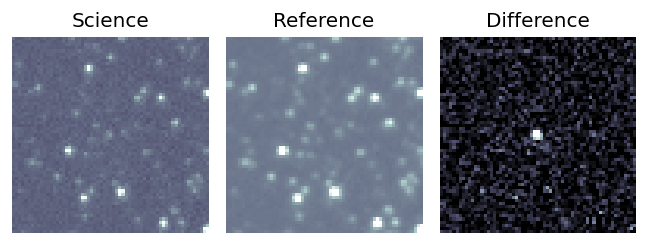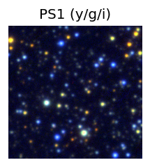
PS1: 0 sources in 3 arcsec
LegacySurvey: 0 sources in 3 arcsec
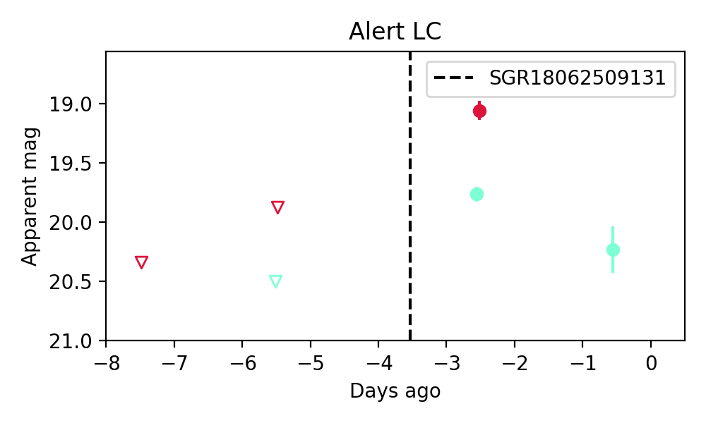
Extinction-corrected gr color:
From alerts: -1.6 +/- 0.09 mag
Rise Rate:
g: 0.25 mag/day
r: 0.28 mag/day
i: -99 mag/day
Fade Rate:
g: 0.23 mag/day
r: -99 mag/day
i: -99 mag/day
2. ZTF25abreyzc (FBOT?) [Back to Top] [Share] [Trigger Swift] [Fritz] [Lasair]RA, Dec: 258.93085, 66.43152 17h15m43.40s, 66d25m53.49sGalactic (l, b): 96.70278, 34.21376 ext(g-r) = 0.041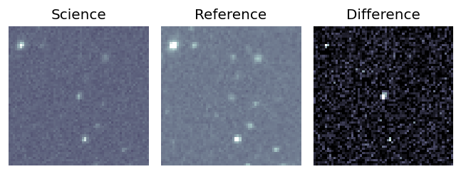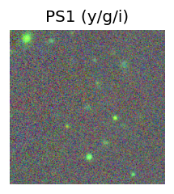
Milliquas v6 (2 arcsec):Found q (description), name = SDSS J171543.43+662553.0, QSO probability: 99 %
SDSS (10 arcsec):Found SDSS phot-z: z=0.55; peak abs mag = -22.57
PS1: 0 sources in 3 arcsec
LegacySurvey: 1 sources in 3 arcsec Closest: d = 0.58 arcsec, 165.2 deg (east of north) photoz=0.71 (68% bounds 0.44, 0.88), type=REX peak abs mag = -23.09 (68% bounds -21.85, -23.68)
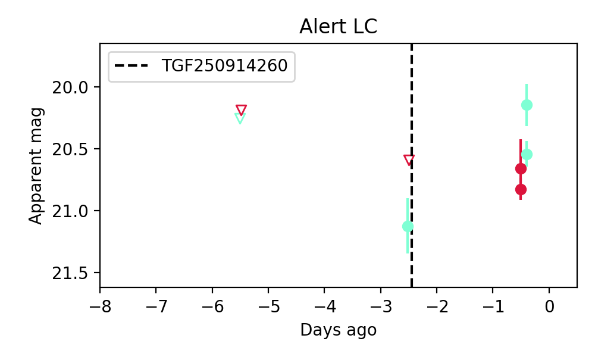
Extinction-corrected gr color:
From alerts: -0.41 +/- 0.12 mag
Rise Rate:
g: 0.33 mag/day
r: 0.08 mag/day
i: -99 mag/day
Fade Rate:
g: -99 mag/day
r: -99 mag/day
i: -99 mag/day
3. ZTF25abrgfoa (Afterglow?) [Back to Top] [Share] [Trigger Swift] [Fritz] [Lasair]RA, Dec: 328.30341, -21.59501 21h53m12.82s, -21d-35m-42.04sGalactic (l, b): 30.69843, -49.24271 ext(g-r) = 0.039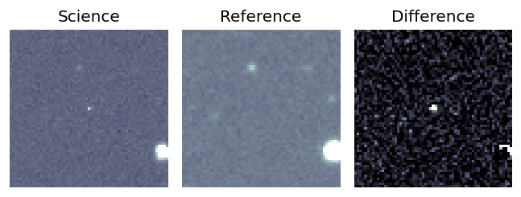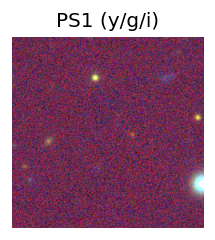
PS1: 1 source in 3 arcsec Closest: d = 7.53 arcsec photoz=0.69+/-0.09 peak abs mag = -23.60
LegacySurvey: 0 sources in 3 arcsec
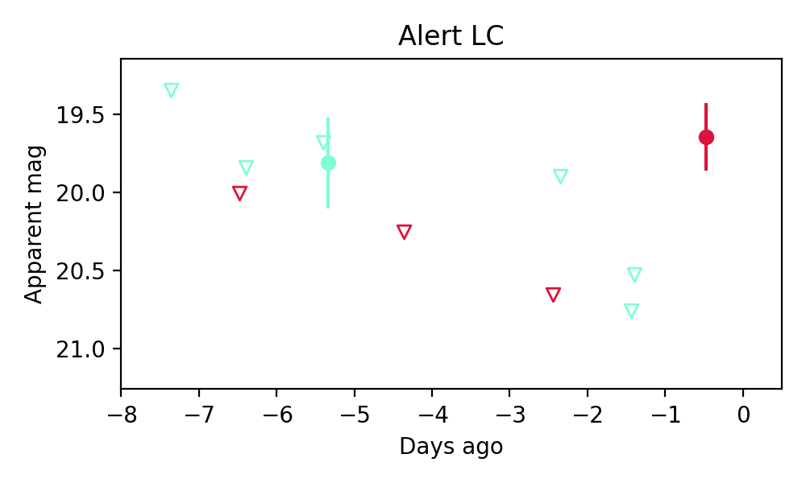
Rise Rate:
g: -99 mag/day
r: 0.52 mag/day
i: -99 mag/day
Fade Rate:
g: 0.24 mag/day
r: -99 mag/day
i: -99 mag/day